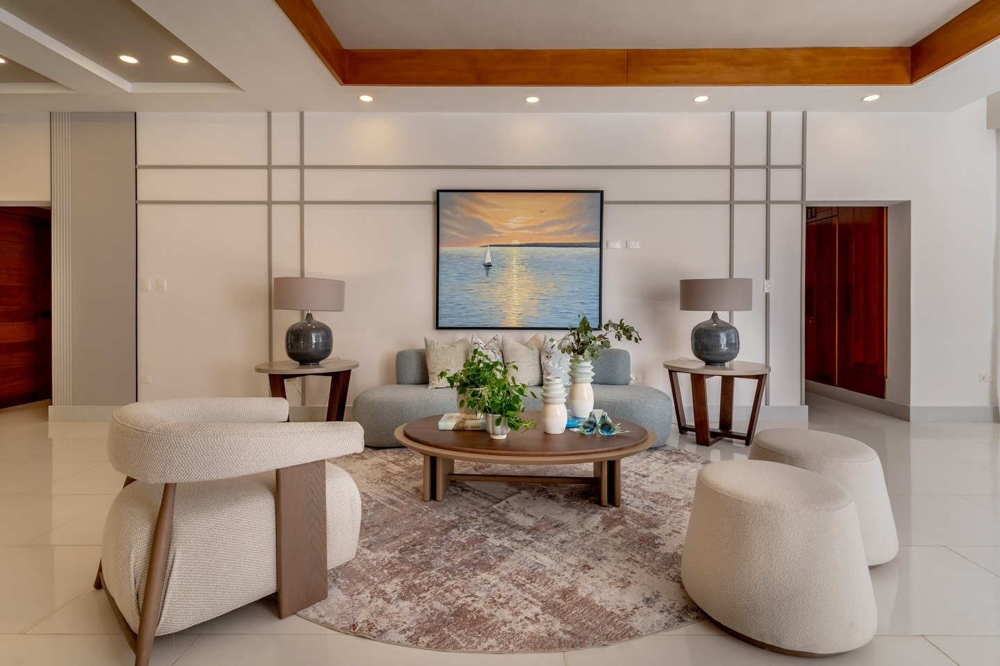
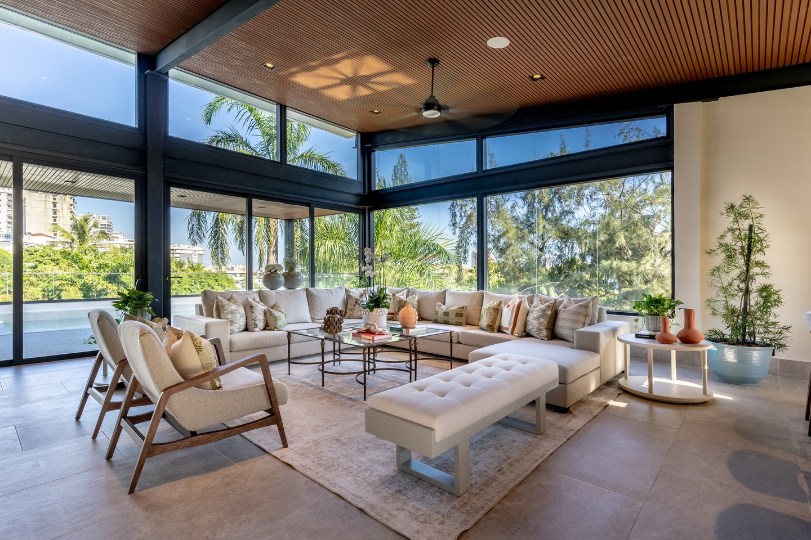

Filosofía de Diseño
El lujo es silencioso. Vive en el equilibrio, la textura y la contención consciente. Soraya selecciona materiales y flujos espaciales para crear ambientes serenos, personales y atemporales.
Sobre Soraya María Pérez
Soraya María Pérez es diseñadora interior y especialista en remodelación con más de una década de experiencia creando espacios residenciales de alta gama. Su trabajo se define por composiciones serenas, texturas en capas y un enfoque arquitectónico de la escala.
Más que diseñar espacios, Soraya interpreta estilos de vida. Cada proyecto inicia con una escucha profunda: entender cómo habitan sus clientes, qué los inspira y cómo desean sentirse en su hogar. A partir de ahí, transforma ideas en atmósferas que elevan lo cotidiano.
Su sello está en la selección cuidada de materiales, la superposición sutil de texturas y una atención rigurosa a la proporción, la luz y el detalle.
Desde el concepto hasta la ejecución, Soraya acompaña cada etapa con presencia y precisión, asegurando un resultado impecable, funcional y atemporal.


El lujo es silencioso. Vive en el equilibrio, la textura y la contención consciente. Soraya selecciona materiales y flujos espaciales para crear ambientes serenos, personales y atemporales.

Cada decisión se conecta con el estilo de vida y la experiencia deseada del cliente. Soraya comunica con claridad, planifica con precisión y protege la inversión con supervisión cercana.